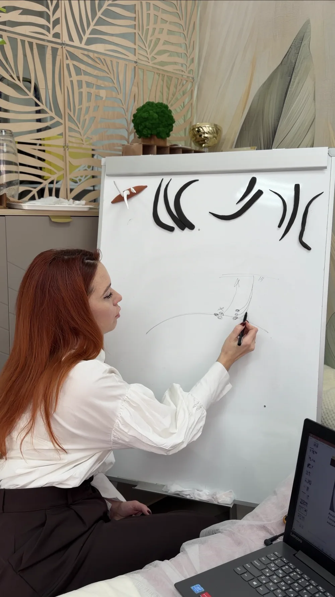

Для мастеров
Повышение квалификации мастеров по наращиванию ресниц в Симферополе
Повышение квалификации по наращиванию ресниц в Симферополе для мастеров, которым нужно точечно разобрать ошибки, усилить технику и работать чище, быстрее и увереннее.
Внутри тарифа
Что именно входит в практикум
Это точечный формат без лишней воды, в котором мы разбираем ошибки, усиливаем руку и доводим качество до более сильного уровня.
- Индивидуальный разбор ошибок. Находим причины, которые мешают работать чище, быстрее и стабильнее.
- База качественной техники. Натяжка века, выделение ресницы, направление, выкладка пучков по плоскостям и постановка руки.
- Формирование объемных пучков. Усиливаем качество сборки и общую аккуратность результата.
- Работа с асимметрией и схемами. Разбираем, как видеть слабые места и корректировать их в работе.
- Трендовые эффекты. Секреты актуальных эффектов, которые помогают быть впереди и расти в чеке.
- Продолжительность. 1 день с отработкой на модели.

Результаты после практикума
Примеры работ с практикума
Реальные примеры «до / после» после разбора ошибок, усиления техники и более чистой, уверенной работы.
Повышение квалификации по наращиванию ресниц в Симферополе поможет улучшить технику, увеличить скорость работы и повысить средний чек. Такой формат особенно полезен мастерам, которым важно увидеть слабые места, сделать результат чище и работать увереннее.
Запись на практикум
Оставьте заявку и получите программу практикума «Работа над ошибками»
Отправим детали и поможем понять, подходит ли вам этот формат именно сейчас.